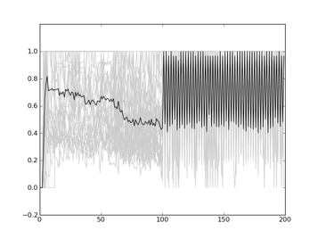
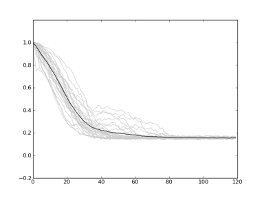
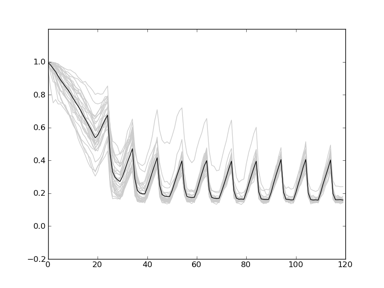
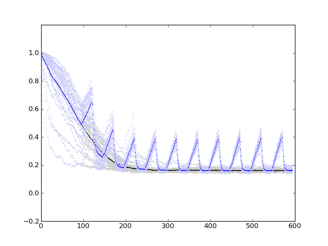
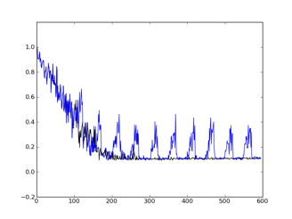
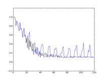
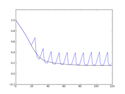

STATUS:
STATUS:
PLAN:
LOG:
rosiec@atlantis:~/research/Devolab Research/evolution_of_modularity/raw_data/051_Selected_Task__Incubator__AlternateSeeds/punish_and_andn_501401/data/analyze$ python ../../../../../../scripts/common\ modules\ and\ helper\ scripts/extract_single_column_to_csv.py --dimensionality 1 8 modularity-?.dat* modularity-???.dat* modularity-????.dat* 0,0,0,0,1,1,1,1,1,1,1,1,1,1,1,1,1,1,1,0.8
rosiec@atlantis:~/research/Devolab Research/evolution_of_modularity/raw_data/051_Selected_Task__Incubator__AlternateSeeds$ rm bleh.csv; for i in punish*; do cd $i/data/analyze/; python ../../../../../../scripts/common\ modules\ and\ helper\ scripts/extract_single_column_to_csv.py --dimensionality 1 8 modularity-?.dat* modularity-???.dat* modularity-????.dat* >> ../../../bleh.csv; cd ../../../; done
[rosiec@caninoko-2]:[18]:[/Volumes/Atlantis/research/Devolab Research/evolution_of_modularity/raw_data/051_Selected_Task__Incubator__AlternateSeeds]:$ python ../../../scripts/generate_graphs_from_raw_data/plot_from_csv.py -m bleh.csv ~/Desktop/poop.png

STATUS:
[caninoko@dev-intel07]:[77]:[/mnt/scratch/caninoko/054]:$ for i in *_53*; do mkdir $i/data/populations/; mv $i/data/detail* $i/data/populations/; done [caninoko@dev-intel07]:[79]:[/mnt/scratch/caninoko/054]:$ mkdir populations [caninoko@dev-intel07]:[80]:[/mnt/scratch/caninoko/054]:$ for i in *_53*; do mv $i/data/populations/ populations/$i/; done
LOG:
rosiec@atlantis:~/research/Devolab Research/evolution_of_modularity/raw_data/054_Modularity_Over_Time__XOR_EQU_more_granular$ rm control_modularity.csv; for i in *_control*; do cd $i/data/analyze/; python ../../../../../../scripts/common\ modules\ and\ helper\ scripts/extract_single_column_to_csv.py --dimensionality 1 8 modularity-???.dat* modularity-????.dat* modularity-?????.dat* >> ../../../control_modularity.csv; cd ../../../; done rosiec@atlantis:~/research/Devolab Research/evolution_of_modularity/raw_data/054_Modularity_Over_Time__XOR_EQU_more_granular$ rm noreward_modularity.csv; for i in *_noreward*; do cd $i/data/analyze/; python ../../../../../../scripts/common\ modules\ and\ helper\ scripts/extract_single_column_to_csv.py --dimensionality 1 8 modularity-???.dat* modularity-????.dat* modularity-?????.dat* >> ../../../noreward_modularity.csv; cd ../../../; done rosiec@malp:/Volumes/rosiec/research/Devolab Research/evolution_of_modularity/raw_data/054_Modularity_Over_Time__XOR_EQU_more_granular$ python ../../../scripts/generate_graphs_from_raw_data/plot_from_csv.py -m control_modularity.csv control_modularity.png rosiec@malp:/Volumes/rosiec/research/Devolab Research/evolution_of_modularity/raw_data/054_Modularity_Over_Time__XOR_EQU_more_granular$ python ../../../scripts/generate_graphs_from_raw_data/plot_from_csv.py -m noreward_modularity.csv noreward_modularity.png

Figure 1 - control_modularity.png

Figure 2 - noreward_modularity.png
STATUS:
PLAN:
12.012.0 - Michael E. Palmer Talk - Notes - Jan 12, 2012.m4a

LOG:
[caninoko@gateway]:[6]:[/mnt/scratch/caninoko/055]:$ for i in *_55*; do mkdir $i/data/populations/; mv $i/data/detail* $i/data/populations/; done [caninoko@gateway]:[5]:[/mnt/scratch/caninoko/055]:$ mkdir populations [caninoko@gateway]:[9]:[/mnt/scratch/caninoko/055]:$ for i in *_55*; do mv $i/data/populations/ populations/$i/; done [caninoko@gateway]:[30]:[/mnt/scratch/caninoko/055]:$ for i in *_55*; do tar -zcvf $i.tar.gz $i; done rosiec@atlantis:~$ scp -r caninoko@gateway.hpcc.msu.edu:/mnt/scratch/caninoko/055/*.tar.gz ./
rosiec@atlantis:~/research/Devolab Research/evolution_of_modularity/raw_data/055$ rm control_modularity.csv; for i in *_control*; do cd $i/data/analyze/; python ../../../../../../scripts/common\ modules\ and\ helper\ scripts/extract_single_column_to_csv.py --dimensionality 1 8 modularity-???.dat* modularity-????.dat* modularity-?????.dat* >> ../../../control_modularity.csv; cd ../../../; done rosiec@atlantis:~/research/Devolab Research/evolution_of_modularity/raw_data/055$ rm noreward_modularity.csv; for i in *_noreward*; do cd $i/data/analyze/; python ../../../../../../scripts/common\ modules\ and\ helper\ scripts/extract_single_column_to_csv.py --dimensionality 1 8 modularity-???.dat* modularity-????.dat* modularity-?????.dat* >> ../../../noreward_modularity.csv; cd ../../../; done rosiec@malp:/Volumes/rosiec/research/Devolab Research/evolution_of_modularity/raw_data/055$ python ../../../scripts/generate_graphs_from_raw_data/plot_from_csv.py -m comparitive_modularity control_modularity.csv noreward_modularity.csv

Figure 3 – 055 Whole Population Average Modularity over time - Control (black) vs NoReward (blue)

Figure 4 – 055 Dominant Modularity over time - Control (black) vs NoReward (blue)

Figure 5 & 4 - 054 Modularity over time - Dominant (left), Whole Pop (right)
PLAN: